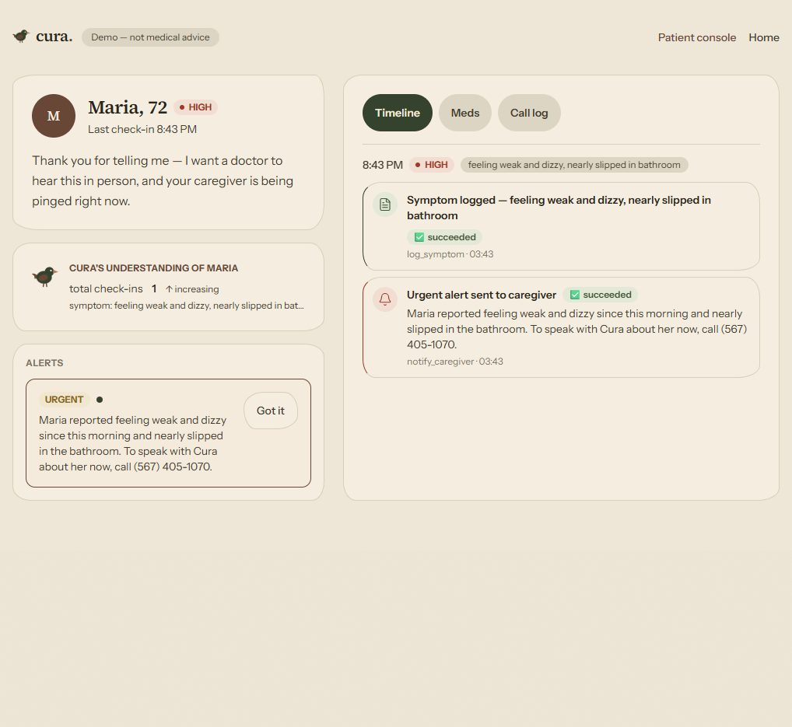

03 — The live demo moments
These three frames are the whole pitch.
Actual product captures from a single check-in turn.

① Cura hears "weak and dizzy" — receipts stamp in, family notified
② "Want me to call now?" → a real Twilio call, on the family's phone

③ The other side of the wall — grade, alert, acknowledge